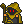
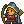
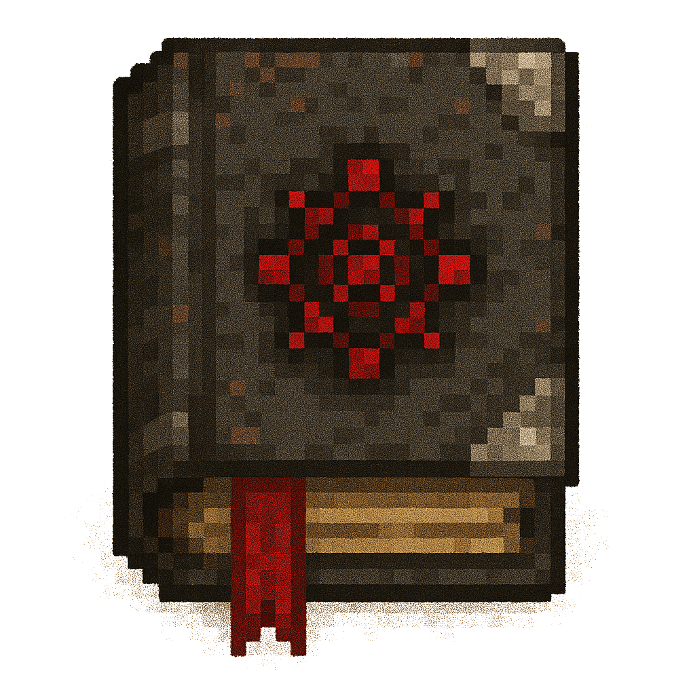
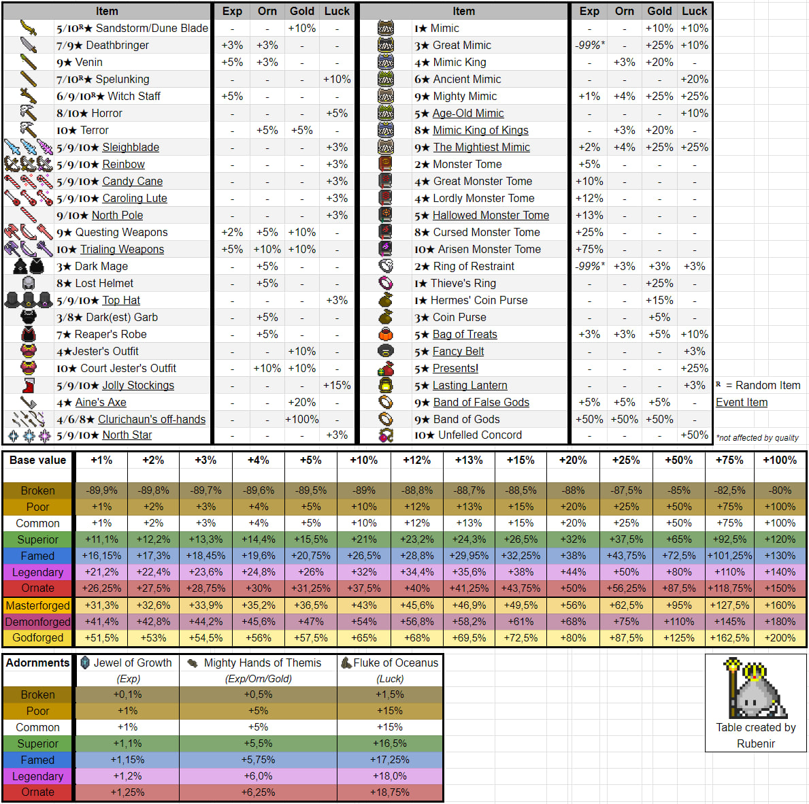
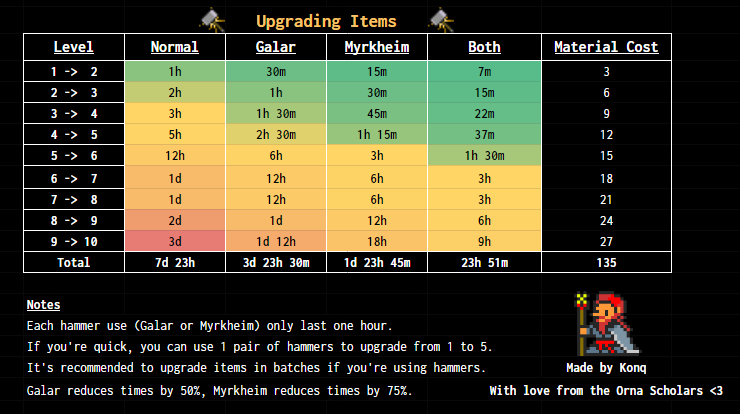
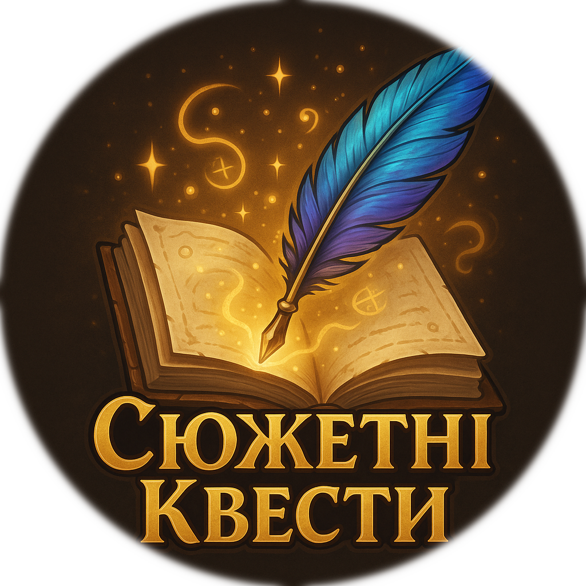

Гайдіус Тоталус 2.0
В гайді викладені мої думки стосовно гри. Якщо ви з чимось не погоджуєтесь чи є зауваження, то пишіть в телеграм чат (посилання є в розділі контактів).
Подяка гравцям Omax, H1dek1, Valleyheart, BIHITAP, Sap1, Lion777 за допомогу в створенні, зауваженнях та наданні корисних порад !
Зміст
1. Класи 
В Орна існує багато варіантів розвитку вашого персонажа. В цьому розділі ми розглянемо деякі з них.
Основні гілки розвитку класів:
Витязі (Valor) - Лицарі та воїни Ліонесу використовують традиційну зброю, важкі обладунки, та б’ються без всяких трюків – все просто, зрозуміло, та нехитро. Вони добре знаються на виживанні у бою, та вивчають відносно прості бойові навички.
Омнімагія (Omnimancy) - Авалон відомий глибокими знаннями всілякої магії, смертоносної та не дуже. Маги Авалону частіше за все використовують руйнівні заклинання. Вони повинні вміти зберігати не тільки здоров’я у бою, а й ману – бо маг без мани дуже швидко перетворюється на ляльку для биття.
Тіньоходи (Shadowmancy) - Аннун – стародавнє королівство, що відоме завдяки своєю обізнаністю на хитрощах та таємних мистецтвах бою. Шахраї Аннуну дуже різкі, швидкі на удар, та орієнтуються на спритність, негативні ефекти та критичні удари. Вони не настільки міцні – відносно інших класів – тому вважається що грати шахраєм трохи складніше ніж іншими класами.
Приборкувачі (Valhallan) - Приборкувачі з Нотрену відомі своєю властивістю майстерно контролювати, підбодрювати, та гамувати своїх компаньйонів. Вони володіють здатністю більш ефективно використовувати не свої навички, а навички свого компаньйона – і через те, грати ними складніше ніж іншими класами.
Елізійці (Elysian) - Елізійські призивачі використовують прадавні механіки призову створінь до бою, які бездумно захищають свого господаря. Через те вважається, що класи призивачів найпростіші для гравця.
 Прадавні боги (The Old
Gods) - Коли герой стане достатньо могутнім, відкриє він силу в собі – силу прадавніх Божеств.
Прадавні боги (The Old
Gods) - Коли герой стане достатньо могутнім, відкриє він силу в собі – силу прадавніх Божеств.
Старці (The Elderred) - це класи, які в минулому вами були відкриті, проте наразі вже недоступні для нових гравців.
Всі класи розподілені на “тіри”, чим вище рівень вашого персонажу, тим вищого тіру клас ви можете придбати. Крім цього більшість класів обмежена по типу зброї і обладунків які вони можуть носити (можете прочитати в описі класу), тому звертайте на це увагу, коли будете переходити на новий клас чи іншу гілку розвитку. У класів є “улюблена” зброя, при використанні котрої ви отримаєте додатковий бонус атаки.
Звичайні Класи купуються за орни. Усі придбані вами класи залишаються у вас. Вам будуть відкриті їх активні навички і ви можете безкоштовно перемикатись між класами, якщо вам буде потрібно. В дереві класів для кожної гілки розвитку - ви можете побачити деякі класи які мають позначку декількох гілок розвитку, це означає, що придбавши клас в одній гілці вам не доведеться купувати його в іншій.
Також, на вищих рівнях, нам знадобляться додаткові класи для корисних баффів. Тому купівлею однієї гілки розвитку класів справа не обмежиться.
Тіри, рівні та ціни класів з посиланням на офіційний сайт:
★T1 - потрібний рівень персонажу 1. Ціна класу 2,5к орн.
★T2 - потрібний рівень персонажу 25. Ціна класу 10к орн.
★T3 - потрібний рівень персонажу 50. Ціна класу 50к орн.
★T4 - потрібний рівень персонажу 75. Ціна класу 100к орн.
★T5 - потрібний рівень персонажу 100. Ціна класу 250к орн.
★T6 - потрібний рівень персонажу 125. Ціна класу 500к орн.
★T7 - потрібний рівень персонажу 150. Ціна класу 2М орн. Крім того з'являється гілка Елізійців, цей клас можна отримати виконавши завдання у НІП Хорус.
★T8 - потрібний рівень персонажу 175. Ціна класу 3,5М орн, для початку гілки Прадавніх Богів ціна 5М, для гілки Елізійців ціна 6М
★T9 - потрібний рівень персонажу 200. Ціна класу 7М орн, для гілки Прадавніх Богів ціна 10М, для гілки Елізійців ціна 11М
★T10 - потрібний рівень персонажу 225. Ціна класу 15М орн, для гілки Прадавніх Богів ціна 20М, для гілки Елізійців ціна 15М
★T11 - автоматично отримують гравці, котрі досягли 250го рівня.
Крім звичайних класів в грі є Зоряні класи. Вони купуються за осколки в гільдії Титаноборців.
Існує по 2 зоряних класи на кожний Т9 і Т10 звичайний клас. Мають свої навички, а також свої плюси і мінуси в порівнянні із звичанийми класами. Гільдію Титаноборців детальніше розглянемо в окремому розділі.
2. Спеціалізації 
Так само, як і з класами на певних тірах доступні спеціалізації.
На відміну від класів, між спеціалізаціями неможливо перемикатись безкоштовно. Якщо ви бажаєте змінити спеціалізацію вам потрібно буде кожен раз віддавати орни. Також, при зміні спеціалізації активні навички від неї не зберігаються.
Як і для класів, у багатьох спек є своя “улюблена” зброя. На це теж варто звертати увагу.
Для кожного класу може підходити як одна так і декілька спеціалізацій. Яку саме вибрати - вирішувати вам. Але я спробую навести деякі приклади вдалих спек, та деякі не дуже вдалих.
Популярні спеки :
(Berserker) - гарна спека для воїнів та розбійників. Дасть приріст в атаці, але понизить рівень здоровья.
(Raider) - продовження Берсерка для високих рівнів.
(Bard) - універсальна спека для всіх класів. Дає +ману та чудові скіли - Mage's Dance, Warrior's Dance.
(Charmer) - продовження Барда для високих рівнів.
(Cleric) - спека для магів. Підвищує деф, рез та рівень здоровья.
(Stargazer) - більш “атакувальна” спека для магів.
(Magus) - чудова спека для мага - білше урону, менше мани на спели.
(Maji) - продовження Магуса.
(Beastmaster \ Tamer) - спеки для Петоводів.
Специфічні спеки :
(не дадуть вам суттєвого бусту або, взагалі, непотрібні для вашого стилю гри)
(Seeker) - єдине що дає це дальність огляду. Сумнівна спека, дуже ситуативна. Якщо у вас є два ліхтаря\ока + факел, то вам цього буде достатньо.
(Swashbuckler) - небезпечна спека. Чим меньше у вас деф, тим сильніша атака. Для цієї спеки потрібен специфічний обладунок. котрий буде зменшувати ваш деф. Гарна спека на хай лвлі для класу Realmshifter.
(Duelist) - подвійна зброя (замість офф-хенду також віпон) в поточній версії гри, поки що, виглядає сумнівно.
(Merchant) - +20% до шансу випадання речей.
Спеки ★Т3 - не дают вам гарного бусту, а на лоу лвлах орни важко збирати. Раджу не витрачати на них орни. Якщо ви не будете вибирати спеціалізацію до 100 рівня, то зможете взяти ★Т5 спеціалізацію безкоштовно.
Список спеціалізацій які мають навички, що наносят урон по всім цілям одразу :
★Т3
(Hunter) (фіз) - (Arrowstorm)
★Т5
(Scholar) (маг) - (Chain Lightning), (Natura), (Wildfire), (Winter Wind)
★Т7
(Bard) (маг) - (Mage's Dance)
(Ranger) (фіз) - (Arrowstorm II)
(Magus) (маг) - (Chain Lightning II), (Natura II), (Wildfire II), (Winter Wind II)
(Time Mage) (маг) - (Lacunus)
(Zwei-fencer) (фіз) - (Sweep)
★Т9
(Maji) (маг) - (Chain Lightning III), (Natura III), (Wildfire III), (Winter Wind III)
(Chronomancer) (маг) - (Lacunus II)
(Charmer) (маг) - (Mage's Pavane)
 Перелік усіх спеціалізацій на orna.guide
3. Досвід, орни, золото
На даний момент максимальний рівень персонажу в Орні - 250.
Підвищуючи рівень вашого персонажу вам будуть відкриватись нові монстри, боси, підземелля та можливість придбати нові класи і спеціалізації.
В Орні кожні 25 лвл є так звані “гепи”. Тобто, на 25, 50, 75, 100, 125, 150, 175, 200, 225 рівнях ви будете опинятись в складному становищі і вам буде важко вбивати навіть простих монстрів, не кажучи про босів.
Щоб це подолати вам варто прокачувати ваші обладунки та зброю у кузні (хоча б до 5го рівня), тоді вам буде легше подолати ці “гепи”.
Таблиця потрібного досвіду на кожний рівень
Для швидшого розвитку вам у пригоді стануть :
(EXP potion) - дає приріст експи х2. Падає с рейд босів, також можливо придбати в магазині за 1000 орн.
(Shrine of Wisdom) - дає приріст експи х2. Зʼявляється випадково на мапі.
(Jewel of Growth) - вставляється в зброю, дає *1,01%. Випадає з міміків.
(Monster Tome) - аксесуар. Є декілька видів, залежно від якості дають різну кількість % приросту. Випадають з босів та звичайних монстрів.
(Band of Gods) - аксесуар, який ви отримаєте за виконання квесту в сторілайн ланцюгу. Дає х1,5 приросту експи.
Експу ви будете отримувати майже за все - монстри, боси, проходження підземель, рейд боси, арени.
Один з ефективних способів прокачування і швидкого експінгу це (за спаданням ефективності) :
1. Проходження данжів з босами (only boss - 5 ключів вашого тіру).
2. Вбивство звичайних босів.
3. Вбивство рейдових світових босів.
4. Вбивство кланових босів.
Скоріш за все ви дуже швидко дійдете до 150 рівня - ★Т7. Але і до ★Т7 ви можете використовувати цей спосіб.
Що необхідно знати :
1. Кожний данж та ваш особистий данж - існують на своїх таймерах.
2. Усі бонуси до експи перемножуються.
3. Ви можете не побачити велику кількість данжів на карті, тому що маєте невелику відстань огляду.
4. Бафи (окрім тимчасових) зберігаються на вас до вашої смерті (або до кінця данжа), аналогічно дебафи на ваших супротивниках.
5. Кращий спосіб отримати сувої виклику рейдових світових босів - завершення данжів.
6. Швидкість вбивства та нанесення максимальної кількості урону пришвидшує експінг.
7. Данжи only boss т7 - 13 босів, т8 та т9 - 20 босів, т10 - 22 боса. Проходження т7 та т8 boss only - забезпечують збільшення загальної кількості ключів, т9 - зменшення.
Виходячи з пунктів, що наведено вище, для успішного експінгу вам знадобиться :
1. Дефолтний сет з речами з бонусом до відстані огляду щоб бачити максимальну кількість данжів.
2. Сет для данжів з максимальною кількістю речей з бонусом для експи (дивись таблиці Hidden Info).
3. Проходження данжів під статуєю мудрості та експ склянкою.
4. Набір скілів з яким ви отримуєте максимальне збільшення ваших статів, і можете максимально задебафати жирного боса.
5. Максимально заточені речі щоб забезпечити вбивство босів з одного каста скіла в данжах.
Отже, якщо ви прагнете максимально швидко прокачатися, ваша гра буде виглядати наступним чином - у дефолтному сеті з максимальним оглядом подорожуєте, збираєте статую мудрості, врубаєте експ склянку і заходите у кожний данж, який вам трапляється. Коли данжів немає - вбиваєте босів на мапі. Використовуючи максимально заточені речі (хоча б 7 рівня) вашого тіру з бонусом до експи, забафуєтесь на початку данжу і вбиваєте усіх босів. Коли у вас немає можливості подорожувати - викликаєте рейдових світових босів та вбиваєте кланових босів.
Різновиди підземель розглянемо в окремому розділі.
Золото та орни :
!!! ОПИСАТИ МАКСИМАЛЬНІ КОЕФІЦІЄНТИ БОНУСІВ !!!На початку гри фарм орн є одним з найважливіших питань. Тому що недостача орн не дає вам змоги придбати клас вищого тіру, придбати зілля експи, спеціалізації і тд.
Починаючи, приблизно, з 200го рівня орни перестають бути таким дефіцитом. Так, їх все ще буде не вистачати щоб придбати все, але для основних потреб їх буде достатньо.
Спробуємо розібратись як можно швидко нафармити орни на лоу лвлах:
Це фарм босів. Подорожувати навколишнім світом та вбивати всіх босів, котрі з’являються навкруги.
За проходження підземель будете отримувати непогану винагороду у вигляді орн, золота та корисних (не завжди) речей.
Вбивство світових рейд босів, котрих ви можете призивати за допомогою сувоїв призову (Summoning scrolls).
На хай лвл найкращим способов фарму орн та експи є так звані “ендлеси”, це особливий режим підземель, в якому немає кінця (поки вас не вбили).
(Lucky Coin) - золото х2
(Lucky Silver Coin) - орни х2
(Shrine of Luck) - золото х2, орни х2, шанс випадання речей х2
Таблиця речей які дають бонуси до досвіду, орн, золота
Калькулятор бонусів орни \ золото \ досвід
 Google Docs з калькулятором бонусів. Для використання скопіюйте документ собі на Google
Drive
Google Docs з калькулятором бонусів. Для використання скопіюйте документ собі на Google
Drive
4. Тваринки
В орні існують так звані “пети”. Це ваші помічники в бою. В кожно пета є певний набір атакуючих чи допоміжних здібностей. Залежно від вашого класу та ситуації вам може знадобитись певний пет. Якщо ви вибрали розвиток персонажа по гілці Петовод, то пет буде вашою основною зброєю. Пети - дуже різноманітні, вибір пета сильно залежить від вашого стилю гри та класу. В кожного пета є певні здібності - будь то атакуючі або допоміжні здібності. Вони можуть дати вам захист своїми скілами, можуть зняти з вас доти, використати та відновити броню або атакувати супротивника.
Згодом кожний вибирає для себе оптимальний набір тваринок під певні ситуації. На хай лвл є певний набір “мастхев” тваринок, які будуть потрібні вам для фарму.
Список тваринок які мають АОЕ вміння : Т4 фіз - Cactus Т5 маг - Storm Dragon, Earthen Dragon, Fire Dragon, Ice Dragon, Scruug* Т7 маг - Fey Dragon*, Alfar Mage* Т8 маг - Steward Dragon*, Steward Gazer*, Amadan* фіз - Steward Cactus* Т9 маг - Ebon Scruug* фіз - Pollux* Т10 фіз - Fey Cactus * - івентові або квестові
5. Зброя, обладунки, аксесуари
Для кожного класа в Орна існує певний тип зброї та обладунків. Лише декілька класів на хай лвлі можуть носити змішані комплекти. Основні характеристики : Def - фізичний захист. Res - магічний захист. Dex - спритність. Atk - фізична сила атаки. Mag - магічна сила атаки. Crit - шанс критичної атаки. Ward - броня. HP - кількість вашого здоров'я. Mana - кількість вашої мани.
Майже всі речі в Орна можуть бути різної якості : Зламаний - Поганий - Звичайний 100% - Хороший - Якісний - Легендарний - Орнатний
Чим вища якість, тим кращі характеристики. Не раджу витрачати ресурси, для покращення речей в кузні, на звичайний шмот. Ресурси доволі цінна штука і далі вам їх буде потрібно доволі багато. До 10го рівня еквіп можна покращувати в звичайні кузні Для 11го рівня потрібно знайти будівлю Alchemist Для 12го рівня потрібно знайти будівлю Demonologist Для того щоб підвищити якість речі на 13й рівень (Godforged) треба щоб на вас була одягнена річ 12го рівня та знайти боса з золотою аурою. Вбивши його буде шанс, що річ покращится до 13го рівня.
Також в зброю можна вставляти атрибути різних стихій : Holy Dark - самий непотрібний, проти нього більше всього резистів Earth Fire - атрибут нашої фракції, дасть вам +25% урону цим атрибутом та +20% резисту до нього. Water Lightning Dragon Arcane
Думки з приводу еквіпа : Магам потрібен еквіп на Mag та Mana. Офф-хенд скрол чи щит з Ward. Воїнам потрібен еквіп на HP, Ward та щит з Ward. Розбійникам потрібен еківіп на Atk, Dex та щит з Ward або колчан стріл. Усім класам, на хай лвлах, потрібен Ward. Якщо будете збирати еквіп в Def, то вас будуть сильно бити маги. Якщо будете збирати еквіп в Res, то вас будуть сильно бити фізи. Ближче до 200 рівня вже не буде такого різноманіття еквіпу, як на початку гри і ви будете розуміти що вам треба, а що ні. “Улюблена зброя” класу чи спеки буде давати вам +5% до урону.
Зброя, обладунки та аксесуари які мають бонуси на експу, орни, золото та шанс випадіння речей
Таблиця часу покращення речей в кузні (з використанням молотів) :
6. Завдання
У світі орни ви можете знайти різноманітних НІП та таверни, в яких можете отримати квести.
Також є щоденні квести (активуються автоматично кожний день), кланові квести та квести в вашій мерії.
Виконавши квест ви отримаєте певну винагороду (орни, золото, речі).
Перелік квестів на orna.guide
 Гайд по сторілайну (ENG)
 Google Docs з послідовно розписаними квестами по ланцюгу кампанії.
Google Docs з послідовно розписаними квестами по ланцюгу кампанії.
7. Досягнення
В листі персонажа можна відкрити розділ з досягненнями і подивитись ваш прогрес. За виконання досягнень ви будете отримувати орни, чим вище рівень досягнення, тим більше орн вам дадуть.
На початку гри гарний приріст по орнам і не дуже важке виконання можуть бути у досягнень - Boss Slayer, Frequent Visitor, Master Blacksmith, Master Angler, Quest Seeker, Skilled Herbalist.